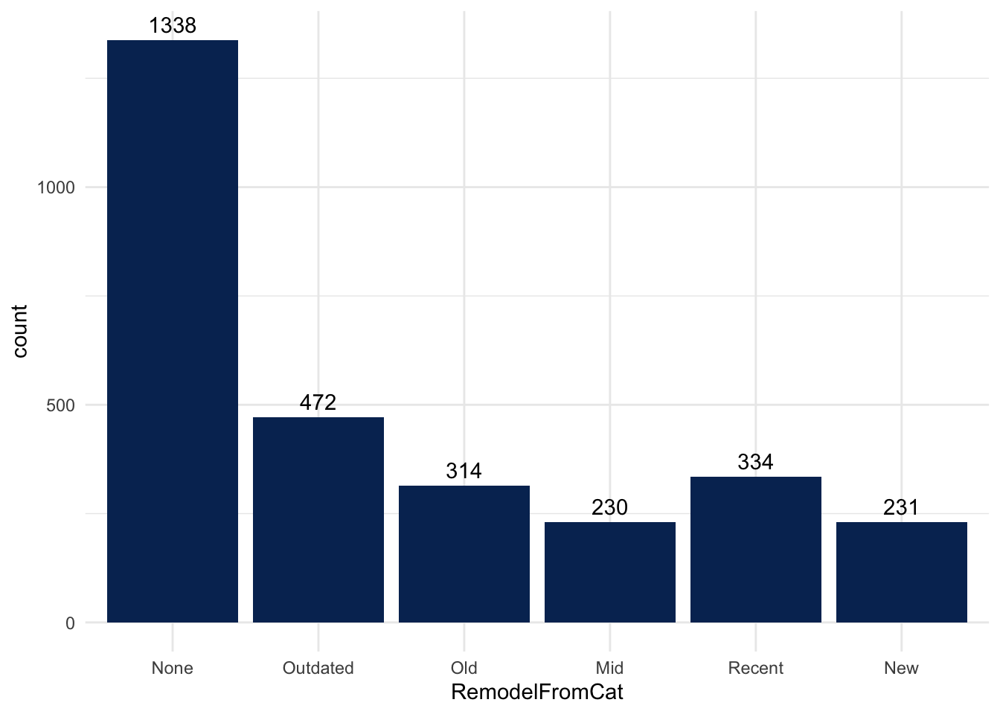

Chapter 4 Data Pre-processing
The goal of this project is to predict the sale price of houses using a large set of house features by applying advanced regression techniques. However, before we jump into building a highly accurate prediction model, an extensive amount of data pre-processing has to be done. The major pre-processing tasks employed in this project are: data cleaning, to address missing values and noisy data; data transformation via smoothing, attribute construction, aggregation, discretization and hierarchy generation in order to transform the data into appropriate forms for mining; and feature selection by removing redundant features and features with near zero variability.
The first step is to explore the data and identify any discrepancies or opportunities for improvement by examining the following:
Missing Values
Attribute types
Distribution, Skewness and Relationships
Dimensionality
4.1 Identifying and Correcting Missing Values
4.1.1 Detect Missing Values
col_na<-which(colSums(is.na(data_full)) > 0)
col_na_sum<-sum(colSums(is.na(data_full)) > 0)
cat("The total number of missing values in the combined data-set is:", sum(is.na(data_full)),"\nThe number of columns containing missing values is:", col_na_sum)
*** The total number of missing values in the combined data-set is: 13965
*** The number of columns containing missing values is: 34We can see from the heatmap in 4.1, that about 6% of the data is “missing”. A simple strategy to deal with missing values is to eliminate the features or examples containing missing values. However, given that there are a total of 13965 missing values spread across 34 features, dropping these data points could mean loss of data critical to the analysis. Instead, we will deal with missing values by imputation using a variety of methods.
# Heat map for missing values of the housing dataset with function missmap from library(Rcpp)
missmap(data_full,col = c("blue","gray"), main ="Heatmap showing Missing values")
Figure 4.1: Missing Values Heatmap
Figure 4.2 shows that the features “PoolQC”, “MiscFeature”, “Alley”, and “Fence” have a high number of missing values. It might be tempting to drop these features, but with one quick look at the data description provided with the data (De Cock 2011a) we learn that “NA” in these cases means that the feature is not applicable, so it should be either “0” or “None”.
NA_col_list <- sort(col_na, decreasing = T) # arrange the named list with descending order
gg_miss_var(data_full[,NA_col_list], show_pct = FALSE )+theme(text = element_text(size = 8,))
Figure 4.2: Number of Missing Values per Column
Table 4.1 shows the number and percentge of missing values per column in the combined dataset.
# Summary of Missing Values per Column/Variable
kable(miss_var_summary(data_full[,NA_col_list]), caption='Summary of Missing Values per Column', booktabs = TRUE)| variable | n_miss | pct_miss |
|---|---|---|
| PoolQC | 2909 | 99.6574169 |
| MiscFeature | 2814 | 96.4028777 |
| Alley | 2721 | 93.2168551 |
| Fence | 2348 | 80.4385063 |
| FireplaceQu | 1420 | 48.6467968 |
| LotFrontage | 486 | 16.6495375 |
| GarageCond | 159 | 5.4470709 |
| GarageQual | 159 | 5.4470709 |
| GarageFinish | 159 | 5.4470709 |
| GarageYrBlt | 159 | 5.4470709 |
| GarageType | 157 | 5.3785543 |
| BsmtExposure | 82 | 2.8091812 |
| BsmtCond | 82 | 2.8091812 |
| BsmtQual | 81 | 2.7749229 |
| BsmtFinType2 | 80 | 2.7406646 |
| BsmtFinType1 | 79 | 2.7064063 |
| MasVnrType | 24 | 0.8221994 |
| MasVnrArea | 23 | 0.7879411 |
| MSZoning | 4 | 0.1370332 |
| Functional | 2 | 0.0685166 |
| BsmtHalfBath | 2 | 0.0685166 |
| BsmtFullBath | 2 | 0.0685166 |
| Utilities | 2 | 0.0685166 |
| SaleType | 1 | 0.0342583 |
| GarageArea | 1 | 0.0342583 |
| GarageCars | 1 | 0.0342583 |
| KitchenQual | 1 | 0.0342583 |
| Electrical | 1 | 0.0342583 |
| TotalBsmtSF | 1 | 0.0342583 |
| BsmtUnfSF | 1 | 0.0342583 |
| BsmtFinSF2 | 1 | 0.0342583 |
| BsmtFinSF1 | 1 | 0.0342583 |
| Exterior2nd | 1 | 0.0342583 |
| Exterior1st | 1 | 0.0342583 |
4.1.2 Dealing With Missing Values
There are two types of missing values in this data-set, some values classified as “NA” are truly missing from the data, the information was not collected. The second type of “NA” means that the feature is not present, so “NA” in this case means either ‘Zero’ for numerical features, ‘None’ for categorical features, or ‘No’ for binary features. By examining the data and reading the data description provided (De Cock 2011a), we are able to determine each case.
4.1.2.1 Manual Imputation of NAs due to Inconsistent Values
Starting with groups of related features for garage, basement, pool and masonry attributes to explore the columns containing missing values, we discover that there are a few inconsistencies in the raw data, for example for the feature MasVnrType, there is a missing value for row ID=2611, but the column “MasVnrArea” shows a value, this obviously indicates that there is a MasVnrType associated with this instance, so instead of replacing it with “None”, we will impute the missing value with the most common value for this feature.
masonry_features <- names(data_full)[sapply(names(data_full), function(x) str_detect(x, "Mas"))]
mas_na<-which(is.na(data_full$MasVnrType) & data_full$MasVnrArea >0)
data_full[mas_na,masonry_features]## MasVnrType MasVnrArea
## 2611 <NA> 198For features containing inconsistent values, listed in table 4.2, we will impute the missing values mannually according to each case.
Inconsitent_Values<- c("BsmtQual", "BsmtCond", "GarageQual","GarageFinish", "GarageCond", "GarageYrBlt","BsmtCond", " PoolQC", "MasVnrArea")
Inconsitent_Values<-tibble("Feature"=Inconsitent_Values, "Method"=rep("Manual Imputation", length(Inconsitent_Values)))
kable(Inconsitent_Values, caption = "Inconsistent Values")| Feature | Method |
|---|---|
| BsmtQual | Manual Imputation |
| BsmtCond | Manual Imputation |
| GarageQual | Manual Imputation |
| GarageFinish | Manual Imputation |
| GarageCond | Manual Imputation |
| GarageYrBlt | Manual Imputation |
| BsmtCond | Manual Imputation |
| PoolQC | Manual Imputation |
| MasVnrArea | Manual Imputation |
Garage Features
Row 2127 has a garage, given that it has values for “GarageArea” (360), “GarageType” (Detchd), and “GarageCars” (1), so fill in the ‘GarageQual’,‘GarageFinish’, and ‘GarageCond’ with most the common for those features values.
garage_features <- names(data_full)[sapply(names(data_full), function(x) str_detect(x, "Garage"))]
#View(data_full[which(is.na(data_full$GarageCond)), garage_features]) # To look at all garage features containing missing values
#count(data_full[which(is.na(data_full$GarageCond)), garage_features]) #159
kable(data_full[2127,garage_features])| GarageType | GarageYrBlt | GarageFinish | GarageCars | GarageArea | GarageQual | GarageCond | |
|---|---|---|---|---|---|---|---|
| 2127 | Detchd | NA | NA | 1 | 360 | NA | NA |
#Get most commom values
kable(names(sapply(data_full[which( data_full$GarageCars == 1 & data_full$GarageType=="Detchd" ) ,garage_features], function(x) sort(table(x), decreasing=TRUE)[1])), col.names = "Most Common Value per Feature") | Most Common Value per Feature |
|---|
| GarageType.Detchd |
| GarageYrBlt.1920 |
| GarageFinish.Unf |
| GarageCars.1 |
| GarageArea.240 |
| GarageQual.TA |
| GarageCond.TA |
# Replace Values Manually
data_full[2127,'GarageQual'] = 'TA'
data_full[2127, 'GarageFinish'] = 'Unf'
data_full[2127, 'GarageCond'] = 'TA'
#Check changes
data_full[2127,garage_features]
*** GarageType GarageYrBlt GarageFinish GarageCars GarageArea GarageQual
*** 2127 Detchd NA Unf 1 360 TA
*** GarageCond
*** 2127 TALikewise, we can see that row 2577 has no garage, so we can fill in garage type with none.
data_full[2577,garage_features]
## GarageType GarageYrBlt GarageFinish GarageCars GarageArea GarageQual
## 2577 Detchd NA <NA> NA NA <NA>
## GarageCond
## 2577 <NA>
#Check and correct levels in Garage Type
levels(data_full$GarageType)
## [1] "2Types" "Attchd" "Basment" "BuiltIn" "CarPort" "Detchd"
data_full$GarageType<-factor(data_full$GarageType, levels=c("None","2Types","Attchd", "Basment","BuiltIn","CarPort","Detchd" ), ordered=FALSE)
#Update Garage type for row 2577
data_full[2577, 'GarageType'] = 'None'There is an error in GarageYrBlt, from the summary we see a year 2207. We will update to 2007.
summary(data_full$GarageYrBlt)
## Min. 1st Qu. Median Mean 3rd Qu. Max. NA's
## 1895 1960 1979 1978 2002 2207 159
subset(data_full[garage_features], GarageYrBlt >= 2011)
## GarageType GarageYrBlt GarageFinish GarageCars GarageArea GarageQual
## 2593 Attchd 2207 RFn 2 502 TA
## GarageCond
## 2593 TA
data_full$GarageYrBlt[data_full$GarageYrBlt==2207] <- 2007
summary(data_full$GarageYrBlt)
## Min. 1st Qu. Median Mean 3rd Qu. Max. NA's
## 1895 1960 1979 1978 2002 2010 159For the missing values in GarageYrBlt, we will fill in NAs with with the year the house was built.
cat("GarageYrBlt has missing values:", sum(is.na(data_full$GarageYrBlt)))
*** GarageYrBlt has missing values: 159
# Fill in year garage built in the same year when house was built. ***
data_full$GarageYrBlt[is.na(data_full$GarageYrBlt)]<-data_full$YearBuilt[is.na(data_full$GarageYrBlt)]
cat(" After inputing NA's with year YearBuilt values, GarageYrBlt has", sum(is.na(data_full$GarageYrBlt)), "missing values")
*** After inputing NA's with year YearBuilt values, GarageYrBlt has 0 missing valuesBasement Features
From viewing at all the basement columns we can see that basement condition is missing in rows 2041, 2186, 2525, and will replace with most the common feature for each column.
basement_features <- names(data_full)[sapply(names(data_full), function(x) str_detect(x, "Bsmt"))]
#View(data_full[is.na(data_full$BsmtCond), basement_features])
data_full[c(2041, 2186,2525),basement_features]
## BsmtQual BsmtCond BsmtExposure BsmtFinType1 BsmtFinSF1 BsmtFinType2
## 2041 Gd <NA> Mn GLQ 1044 Rec
## 2186 TA <NA> No BLQ 1033 Unf
## 2525 TA <NA> Av ALQ 755 Unf
## BsmtFinSF2 BsmtUnfSF TotalBsmtSF BsmtFullBath BsmtHalfBath
## 2041 382 0 1426 1 0
## 2186 0 94 1127 0 1
## 2525 0 240 995 0 0
#names(which.max(table(data_full$BsmtCond)))
data_full[c(2041,2186, 2525),'BsmtCond']=names(which.max(table(data_full$BsmtCond)))
#Check changes
data_full[c(2041, 2186,2525), basement_features]
## BsmtQual BsmtCond BsmtExposure BsmtFinType1 BsmtFinSF1 BsmtFinType2
## 2041 Gd TA Mn GLQ 1044 Rec
## 2186 TA TA No BLQ 1033 Unf
## 2525 TA TA Av ALQ 755 Unf
## BsmtFinSF2 BsmtUnfSF TotalBsmtSF BsmtFullBath BsmtHalfBath
## 2041 382 0 1426 1 0
## 2186 0 94 1127 0 1
## 2525 0 240 995 0 0Pool Features
There are three pools where values for the ‘quality’ are missing, so we will fill in with the most common value based on the area of the pool.
pool_features <- names(data_full)[sapply(names(data_full), function(x) str_detect(x, "Pool"))]
data_full[c(2421,2504,2600),pool_features]
## PoolArea PoolQC
## 2421 368 <NA>
## 2504 444 <NA>
## 2600 561 <NA>
pool_na<-which(is.na(data_full$PoolQC) & data_full$PoolArea >0)
aggregate(data=data_full, PoolArea~PoolQC, mean, na.rm=TRUE)
## PoolQC PoolArea
## 1 Ex 359.75
## 2 Fa 583.50
## 3 Gd 648.50
data_full$PoolArea[which(is.na(data_full$PoolQC) & data_full$PoolArea >0)]
## [1] 368 444 561
#Replace NA with most common values
data_full$PoolQC[data_full$Id == 2421] <- "Ex"
data_full$PoolQC[data_full$Id == 2504] <- "Ex"
data_full$PoolQC[data_full$Id == 2600] <- "Fa"
#Check changes
data_full[c(2421,2504,2600),pool_features]
## PoolArea PoolQC
## 2421 368 Ex
## 2504 444 Ex
## 2600 561 FaMasVnrType Features
There is a missing value for row ID=2611 in the MasVnrType column, we will replace with most common “MasVnrType”.
masonry_features <- names(data_full)[sapply(names(data_full), function(x) str_detect(x, "Mas"))]
mas_na<-which(is.na(data_full$MasVnrType) & data_full$MasVnrArea >0)
mas_na #ID=2611
## [1] 2611
data_full[2611,masonry_features]
## MasVnrType MasVnrArea
## 2611 <NA> 198
data_full$MasVnrArea[which(is.na(data_full$MasVnrType) & data_full$MasVnrArea >0)] #198
## [1] 198
aggregate(data=data_full, MasVnrArea~MasVnrType, mean, na.rm=TRUE)
## MasVnrType MasVnrArea
## 1 BrkCmn 195.4800000
## 2 BrkFace 261.6723549
## 3 None 0.7072331
## 4 Stone 239.5502008
names(which.max(table(data_full$MasVnrType)))
## [1] "None"
summary(data_full$MasVnrType) #most common is BrkFace
## BrkCmn BrkFace None Stone NA's
## 25 879 1742 249 24
data_full$MasVnrType[data_full$Id == 2611] <- "BrkFace"
#Check Changes
data_full[2611,masonry_features]
## MasVnrType MasVnrArea
## 2611 BrkFace 1984.1.2.2 Imputation with Mode for Categorical Features with a Few NAs
For some of the categorical features only missing a few values, we filled in the missing values with the most commonly occurring attribute value. Specially because for many of these the most frequent category was already over-represented, so it is pretty safe to assume that the missing values are more likely to be in the most common category.
Figure 4.3: Categorical Features with Few NAs
| Feature | Method |
|---|---|
| Utilities | Mode |
| Functional | Mode |
| Exterior1st | Mode |
| Exterior2nd | Mode |
| Electrical | Mode |
| KitchenQual | Mode |
| SaleType | Mode |
4.1.2.3 Imputation with “None” for Categorical Features
According to the data description file (De Cock 2011a) for the categorical features listed in MissValsSumm, NA means that the feature is not present in the house. For example, the house doesn’t have a garage. For these features the NA values were replaced with “None”.
| Feature | Method |
|---|---|
| GarageFinish | None |
| GarageQual | None |
| GarageType | None |
| GarageCond | None |
| BsmtCond | None |
| BsmtExposure | None |
| BsmtQual | None |
| BsmtFinType1 | None |
| BsmtFinType2 | None |
| FireplaceQu | None |
| EnclosedPorch | None |
| MiscFeature | None |
| Alley | None |
| Fence | None |
| MasVnrType | None |
na_none <- c("GarageFinish", "GarageQual", "GarageType", "GarageCond", "BsmtCond", "BsmtExposure", "BsmtQual", "BsmtFinType1", "BsmtFinType2", "FireplaceQu", "EnclosedPorch","PoolQC","MiscFeature","Alley", "Fence", "MasVnrType")
data_full[,na_none] <- apply(data_full[,na_none], 2,
function(x) {replace(x, is.na(x), "None")})4.1.2.4 Imputation with Zero (0) for Numerical Features where NA means Feature is not Present
According to the data description file (De Cock 2011a) for the numerical features listed in table 4.5. NA means that the feature is not present in the house, so we replaced NA with the number zero for these features.
Continous <- c("BsmtFinSF1","BsmtFinSF2", "BsmtUnfSF", "TotalBsmtSF", "BsmtFullBath", "BsmtHalfBath","GarageCars","GarageArea", "MasVnrArea")
Continous <- tibble("Feature"=Continous, "Method"=rep("0",length(Continous)))
kable(Continous, caption = "NA means '0'")| Feature | Method |
|---|---|
| BsmtFinSF1 | 0 |
| BsmtFinSF2 | 0 |
| BsmtUnfSF | 0 |
| TotalBsmtSF | 0 |
| BsmtFullBath | 0 |
| BsmtHalfBath | 0 |
| GarageCars | 0 |
| GarageArea | 0 |
| MasVnrArea | 0 |
4.1.2.5 Imputation with estimation for Features with Large Number of Missing Values
Lastly, we were left with two features as seen in 4.4. LotFrontage, which captures the linear feet of street-connected to the property; and MSZoning, which indicates the different zoning classifications ranging from agricultural to residential. Because these features had a large percentage of missing values, it might be better to estimate their value based on other attributes. I used the mice package(van Buuren and Groothuis-Oudshoorn 2011), which uses a Random Forest algorithm to estimate the missing values.
cols_missing_values2<-data_full[which(colSums(is.na(data_full))>0)]
plot_missing(cols_missing_values2)
Figure 4.4: Remaining Missing Values
| Feature | Method |
|---|---|
| LotFrontage | Prediction |
| MSZoning | Prediction |
#Impute LotFrontage (This takes a long time to run)
library(mice)
set.seed(123)
mice_rf_mod<- mice(data_full[, !names(data_full) %in% c('Id', 'SalePrice')], method ='rf', printFlag = FALSE)
## Warning: Number of logged events: 73
mice_output <- complete(mice_rf_mod)
#Inpute LotFrontage
sum(is.na(data_full$LotFrontage))
## [1] 486
data_full$LotFrontage[is.na(data_full$LotFrontage)] <- mice_output$LotFrontage[is.na(data_full$LotFrontage)]
sum(is.na(data_full$LotFrontage))
## [1] 0
#Inpute MSZoning
set.seed(123)
sum(is.na(data_full$MSZoning))
## [1] 4
data_full$MSZoning[is.na(data_full$MSZoning)] <- mice_output$MSZoning[is.na(data_full$MSZoning)]
sum(is.na(data_full$MSZoning))
## [1] 0After imputing values for all NA’s, confirm all missing values are now cleared.
sum(is.na(data_full))
## [1] 0
missmap(data_full,col = c("red","gray"), main ="Heatmap showing Missing values")Figure 4.5: Final Missing Values HeatMap
4.2 Correct Data Types
The next step in pre-processing, after all the NA values have been cleared, is to identify and correct data type inconsistencies. The raw data shows that there are 43 factors, 37 integers, and 1 numeric data types.
##
## factor integer
## 43 38
##
## factor integer numeric
## 43 37 1Our current dataset looks like this:
## Integer Features (int): Id MSSubClass LotFrontage LotArea OverallQual OverallCond YearBuilt YearRemodAdd X1stFlrSF X2ndFlrSF LowQualFinSF GrLivArea FullBath HalfBath BedroomAbvGr KitchenAbvGr TotRmsAbvGrd Fireplaces WoodDeckSF OpenPorchSF X3SsnPorch ScreenPorch PoolArea MiscVal MoSold YrSold
## Categorical Features: MSZoning Street LotShape LandContour LotConfig LandSlope Neighborhood Condition1 Condition2 BldgType HouseStyle RoofStyle RoofMatl ExterQual ExterCond Foundation Heating HeatingQC CentralAir PavedDrive SaleCondition
## Character features: Alley Utilities Exterior1st Exterior2nd MasVnrType BsmtQual BsmtCond BsmtExposure BsmtFinType1 BsmtFinType2 Electrical KitchenQual Functional FireplaceQu GarageType GarageFinish GarageQual GarageCond EnclosedPorch PoolQC Fence MiscFeature SaleType
## Numerical Features(num): MasVnrArea BsmtFinSF1 BsmtFinSF2 BsmtUnfSF TotalBsmtSF BsmtFullBath BsmtHalfBath GarageYrBlt GarageCars GarageArea SalePriceHowever, the documentation on the data (De Cock 2011a) says that the data-set consist of 20 continuous features that refer to area dimensions, 14 discrete features that quantify the number of items in the house, 23 nominal categorical features that refer to types of dwellings, materials and conditions, and 23 ordinal categorical features that rate various property related items. After correcting the data types according to the documentstion, it should look as shown in table 4.7.
| Cont_Features_20 | Disc_Features_14 | Nom_Categorical_23 | Ord_Categorical_23 |
|---|---|---|---|
| LotFrontage | BsmtFullBath | Neighborhood | Utilities |
| MasVnrArea | BsmtHalfBath | SaleCondition | LandSlope |
| BsmtFinSF1 | FullBath | HouseStyle | ExterQual |
| BsmtFinSF2 | HalfBath | Street | ExterCond |
| BsmtUnfSF | BedroomAbvGr | Alley | BsmtQual |
| TotalBsmtSF | KitchenAbvGr | CentralAir | BsmtCond |
| GarageArea | TotRmsAbvGrd | LandContour | BsmtExposure |
| X1stFlrSF | Fireplaces | Condition1 | BsmtFinType1 |
| X2ndFlrSF | GarageCars | Condition2 | BsmtFinType2 |
| LowQualFinSF | GarageYrBlt | BldgType | HeatingQC |
| GrLivArea | YearBuilt | RoofStyle | Electrical |
| X3SsnPorch | YearRemodAdd | RoofMatl | KitchenQual |
| PoolArea | MoSold | Exterior1st | Functional |
| WoodDeckSF | YrSold | Exterior2nd | FireplaceQu |
| SalePrice | Foundation | GarageFinish | |
| EnclosedPorch | Heating | GarageQual | |
| ScreenPorch | GarageType | GarageCond | |
| LotArea | MiscFeature | PavedDrive | |
| MiscVal | SaleType | PoolQC | |
| OpenPorchSF | MSSubClass | Fence | |
| MSZoning | OverallQual | ||
| MasVnrType | OverallCond | ||
| LotConfig | LotShape |
The first step is to convert the numeric features to the appropriate data type.
to_num <-c( "LotFrontage", "MasVnrArea", "BsmtFinSF1", "BsmtFinSF2", "BsmtUnfSF", "TotalBsmtSF", "GarageArea","X1stFlrSF", "X2ndFlrSF", "LowQualFinSF", "GrLivArea", "X3SsnPorch", "PoolArea", "WoodDeckSF", "SalePrice" ,"EnclosedPorch", "ScreenPorch", "LotArea", "MiscVal", "OpenPorchSF")
data_full[,to_num] <- lapply(data_full[,to_num], as.numeric)
to_int<-c("BsmtFullBath","BsmtHalfBath","FullBath", "HalfBath", "BedroomAbvGr", "KitchenAbvGr", "TotRmsAbvGrd", "Fireplaces", "GarageCars", "MoSold", "YrSold","YearRemodAdd","GarageYrBlt","YearBuilt")
data_full[,to_int] <- lapply(data_full[,to_int], as.integer)The second step, is to convert missclassified numeric features to categorical.
nom_to_cat <-c("MasVnrType","MSSubClass", "Neighborhood","CentralAir", "SaleCondition", "HouseStyle", "Street", "Alley", "LandContour", "Condition1", "Condition2", "BldgType", "RoofStyle", "RoofMatl", "Exterior1st", "Exterior2nd", "Foundation", "BsmtExposure", "Heating", "GarageType", "PavedDrive", "MiscFeature", "SaleType")
data_full[,nom_to_cat] <- lapply(data_full[,nom_to_cat], factor)The third step is to add levels to ordinal categorical features.
data_full$Utilities<-factor(data_full$Utilities,levels=c("ELO","NoSeWa","NoSewr","AllPub"), ordered=TRUE)
data_full$ExterQual<-factor(data_full$ExterQual, levels=c("Po","Fa","TA","Gd","Ex"), ordered=TRUE)
data_full$ExterCond<-factor(data_full$ExterCond, levels=c("Po","Fa","TA","Gd","Ex"), ordered=TRUE)
data_full$FireplaceQu<-factor(data_full$FireplaceQu, levels=c("None","Po","Fa","TA","Gd","Ex"), ordered=TRUE)
data_full$Functional<-factor(data_full$Functional,levels=c("Sal", "Sev", "Maj2", "Maj1","Mod","Min2","Min1","Typ"), ordered=TRUE)
data_full$PoolQC<-factor(data_full$PoolQC,levels=c("None","Fa","TA","Gd","Ex"), ordered=TRUE)
data_full$BsmtCond<-factor(data_full$BsmtCond, levels=c("None","Po","Fa","TA","Gd","Ex"), ordered=TRUE)
data_full$BsmtQual<-factor(data_full$BsmtQual,levels=c("None","Po","Fa","TA","Gd","Ex"), ordered=TRUE)
data_full$BsmtExposure<-factor(data_full$BsmtExposure, levels=c("None", "No", "Mn", "Av", "Gd"), ordered=TRUE)
data_full$BsmtFinType1<-factor(data_full$BsmtFinType1, levels=c("None","Unf","LwQ","Rec","BLQ","ALQ","GLQ"), ordered=TRUE)
data_full$BsmtFinType2<-factor(data_full$BsmtFinType2, levels=c("None","Unf","LwQ","Rec","BLQ","ALQ","GLQ"), ordered=TRUE)
data_full$HeatingQC<-factor(data_full$HeatingQC, levels=c("Po", "Fa", "TA", "Gd", "Ex"), ordered=TRUE)
data_full$KitchenQual<-factor(data_full$KitchenQual, levels=c("Po", "Fa", "TA", "Gd", "Ex"), ordered=TRUE)
data_full$GarageQual<-factor(data_full$GarageQual, levels=c("None","Po","Fa","TA","Gd","Ex"), ordered=TRUE)
data_full$GarageCond<-factor(data_full$GarageCond, levels=c("None","Po","Fa","TA","Gd","Ex"), ordered=TRUE)
data_full$Electrical<-factor(data_full$Electrical, levels=c("Mix","FuseP","FuseF","FuseA","SBrkr"), ordered=TRUE)
data_full$GarageFinish<-factor(data_full$GarageFinish, levels=c("None","Unf","RFn","Fin"), ordered=TRUE)
data_full$PavedDrive<-factor(data_full$PavedDrive, levels=c("N","P","Y"), ordered=TRUE)
data_full$Fence<-factor(data_full$Fence, levels=c("None","MnWw","GdWo", "MnPrv", "GdPrv"), ordered=TRUE)
data_full$OverallQual<-factor(data_full$OverallQual, levels=c("1", "2","3","4", "5", "6", "7", "8", "9", "10"), ordered=TRUE)
data_full$OverallCond<-factor(data_full$OverallCond, levels=c("1", "2","3","4", "5", "6", "7", "8", "9", "10"), ordered=TRUE)
data_full$GarageType<-factor(data_full$GarageType, levels=c("None","2Types","Attchd", "Basment","BuiltIn","CarPort","Detchd" ), ordered=FALSE)
data_full$LandSlope<-factor(data_full$LandSlope, levels=c("Gtl","Mod","Sev" ), ordered=TRUE)
data_full$LotShape<-factor(data_full$LotShape, levels=c("IR1","IR2", "IR3", "Reg" ), ordered=TRUE)Confirm all features are now approrpiately classified by their data type.
*** 15 Discrete Features: Id YearBuilt YearRemodAdd BsmtFullBath BsmtHalfBath FullBath HalfBath BedroomAbvGr KitchenAbvGr TotRmsAbvGrd Fireplaces GarageYrBlt GarageCars MoSold YrSold
*** 20 Continous Feature: LotFrontage LotArea MasVnrArea BsmtFinSF1 BsmtFinSF2 BsmtUnfSF TotalBsmtSF X1stFlrSF X2ndFlrSF LowQualFinSF GrLivArea GarageArea WoodDeckSF OpenPorchSF EnclosedPorch X3SsnPorch ScreenPorch PoolArea MiscVal SalePrice
*** 23 Nominal Categorical Features: MSSubClass MSZoning Street Alley LandContour LotConfig Neighborhood Condition1 Condition2 BldgType HouseStyle RoofStyle RoofMatl Exterior1st Exterior2nd MasVnrType Foundation Heating CentralAir GarageType MiscFeature SaleType SaleCondition
*** 23 Ordered Categorical Features: LotShape Utilities LandSlope OverallQual OverallCond ExterQual ExterCond BsmtQual BsmtCond BsmtExposure BsmtFinType1 BsmtFinType2 HeatingQC Electrical KitchenQual Functional FireplaceQu GarageFinish GarageQual GarageCond PavedDrive PoolQC Fence4.3 Feature Transformation
With clean data in the correct form, it is time to start the Exploratory Data Analysis (EDA). By visualizing the data we hope to uncover interesting patterns and relationships which we could use to enhance the predictive value of the features via transformation or new feature creation.
4.3.1 Visualizing the Distribution and Spread of Target Feature: SalesPrice
The histogram of the “SalesPrice” feature in figure 4.6 shows a few very large values on the right, making the distribution of the data right skewed. Since the goal is to predict the continuous numerical variable “SalesPrice” with regression models, it might be useful to transform it, since one of the assumptions of regression analysis is that the error between the observed and expected values (the residuals) should be normally distributed, and violations of this assumption often stem from a skewed response variable. We can make the distribution more normal by taking the natural logarithm, since in a right-skewed distribution where there are a few very large values, the log transformation helps bring these values into the center. After applying the log transformation, as seen in 4.7, the distribution looks more symmetrical.
#Create a copy of the whole dataset to work from here on out
data_2<-data_full
#Create a set that includes only the training examples
data_2_train<-data_2[1:1460,]
par(mfrow=c(1,1))
ggplot(data_2_train, aes(SalePrice)) +
geom_histogram(fill="#053061", alpha=.5, color="#F5F5F5" , bins = 30)+ theme(
panel.border = element_blank(),
panel.grid.major = element_blank(),
panel.grid.minor = element_blank(),
axis.line = element_line(colour = "#053061"))+ scale_x_continuous(labels = function(x) format(x, scientific = FALSE))+
geom_vline(aes(xintercept = mean(SalePrice),
color = "mean"), linetype = "dashed", size = .7) +
geom_vline(aes(xintercept = median(SalePrice),
color = "median"), linetype = "dashed", size = .7) +
scale_color_manual(name = "Central Tendency", values = c(mean = "#67001F", median = "#01665E"))Figure 4.6: Target Feature: SalesPrice
#Log transform the Target Feature
data_2_log<-data_2_train
data_2_log$SalePrice<-log(data_2_log$SalePrice)
ggplot(data_2_log, aes((SalePrice))) +
geom_histogram(fill="#053061", alpha=.5, color="#F5F5F5", bins = 30)+ theme(
panel.border = element_blank(),
panel.grid.major = element_blank(),
panel.grid.minor = element_blank(),
axis.line = element_line(colour = "#053061"))+ scale_x_continuous(labels = function(x) format(x, scientific = FALSE)) +
geom_vline(aes(xintercept = mean(SalePrice),
color = "mean"), linetype = "dashed", size = .7) +
geom_vline(aes(xintercept = median(SalePrice),
color = "median"), linetype = "dashed", size = .7) +
scale_color_manual(name = "Central Tendency", values = c(mean = "#67001F", median = "#01665E"))Figure 4.7: Log-Transformed SalesPrice
4.3.2 Features Highly Correlated with Sales Price
Given the large number of features in the data-set, we will focus our data engineering efforts on those features which are highly correlated with our variable of interest.
For continuous features, the correlation plot shows Garage Area, Great Living Room Area, First Floor SF, Total Basement SF, and Masonry Veneer Area have a strong positive correlation with Sale Price.

Figure 4.8: Continous Features and Sale Price Correlation Plot
From the histograms we can see that many of the continuous independent variables are right skewed, similar to the response, so it might be a good idea to normalize these prior to modeling, since many algorithms perform better with normalized data because it improves the numerical stability of the model and reduces training time (Zhang_2019).

Figure 4.9: Continous Features Distribution Plots
The correlation plot for the discrete features in 4.10 shows that YearBuilt, YearRemodAdd, GarageYearBuilt, GarageCars, FullBath, FirePlaces, and TotRmsAbvGrd are strongly and positively correlated with SalePrice:
Figure 4.10: Discrete Features and Sale Price Correlation Plot
4.3.3 Attribute Construction from Year Features
The barplot of Year Built shows a clear distinction between the number of houses built and sold in the 2000s vs the number built and sold in before that time. The distribution is left skewed, as we can see that the mean of the distribution is less than the median. Most importantly, since there are so many unique years, it might be helpful to create a new “age” variable by subtracting the year built from 2010, which is the upper limit of year sold in the data-set. And we can further refine this new age variable later on by binning age groups into buckets from old to new, thereby reducing the number of levels.
Figure 4.11: Year Built vs Sales Price
Curiously, in the scatter plot shown in 4.12, where the dots have been colored in light blue by the YearRemodAdd feature, newer houses are displaying as having been remodeled, apparently if the house has not been remodeled the year remodeled defaults to the year built. To improve the value of this metric we can create a new binary feature for Remodeled: Yes or No. Also, it might be useful to create a feature to show how recently the house was remodeled, and bin these into categories from most recently remodeled.
Figure 4.12: Year Bult vs Sales Prie Colored by Year Remodeled
In order to make the year features more meaningful, we created new attributes as indicated in the table below. In addition to the building age and time since remodeled features, we added a feature to indicate if the home is a new build, since it is likely that being a new home will have an impact on the sale’s price. We also added a feature for the year the house was sold, since macro economic events, like the economic depression in 2008, could also impact the sale price. Later, we simplify some of these newly created features by binning them into categories with fewer levels. Since all of the categorical features will have to be converted into numeric via dummy coding for modeling, having fewer levels will help with model performance and dimensionality reduction.
Attribute Construction from Year Features
| New Feature | Method |
|---|---|
| BldgAge | 2010 - YearBuilt |
| NewBuild | If YearBuilt or YearBuilt + 1 = YrSold then NewBuild = 1 |
| Remod | If YearBuilt = YearRemodAdd then Remod = 0 |
| TimeSinceRemod | 2010 - YearRemodAdd |
| LastSold | 2010 - YrSold |
# Remodeled
data_2['Remod'] <- ifelse(data_2$YearBuilt==data_2$YearRemodAdd, 0, 1) #0=No Remodeling, 1=Remodeling
#New Build
data_2['NewBuild'] <- ifelse(data_2$YearBuilt == data_2$YrSold|data_2$YearBuilt+1 == data_2$YrSold, 1,0)
# Age of property based on last year of dataset
data_2['BldgAge']<- max(data_2$YearBuilt) - data_2$YearBuilt
head(data_2[,c("YearBuilt","YrSold", "BldgAge","YearRemodAdd", "Remod", "NewBuild")])
## YearBuilt YrSold BldgAge YearRemodAdd Remod NewBuild
## 1 2003 2008 7 2003 0 0
## 2 1976 2007 34 1976 0 0
## 3 2001 2008 9 2002 1 0
## 4 1915 2006 95 1970 1 0
## 5 2000 2008 10 2000 0 0
## 6 1993 2009 17 1995 1 04.3.4 Reducing Levels by Grouping Unrepresented Categories
Another way that we can improve the data for mining is to reduce the levels in categorical variables by merging under-represented categories. For example, in the case of the fireplaces, we can see in scatterplot 4.13 that there are only a few houses that have 3 fireplaces, and the scatter plot shows that the relationship between three fireplaces and price is not much different than between two fireplaces and price, so we can merge these into one level.
Figure 4.13: Fireplaces Scatter Plot
Grouping Fireplace Features
#FirePlaces
data_2$Fireplaces[data_2$Fireplaces==3]<-2
data_2$Fireplaces[data_2$Fireplaces==4]<-2
ggplot(data_2[1:1460,], aes(x=as.factor(Fireplaces), y=SalePrice, color=Fireplaces)) + geom_jitter(height = 1) Figure 4.14: Fireplaces After Groupping
Similarly, the scatter plot in 4.15 of the “GarageCars” variable shows that few houses have more than three garages, so we could simplify the levels in this feature by keeping only three levels: 1,2, and 3+.
Figure 4.15: Discrete Features Scatter Plots
data_2$GarageCars[data_2$GarageCars==4]<-3
data_2$GarageCars[data_2$GarageCars==5]<-3
ggplot(data_2[1:1460,], aes(x=GarageCars, y=SalePrice, color=(GarageCars))) + geom_jitter(height = 1) + labs(title="GarageCars vs Sale Price", subtitle="Training Data")Figure 4.16: Garage Cars After Groupping
We applied this treatment to the features listed in the table below. This will make these features more robust for modeling.
Reducing Levels by Grouping
| New Feature | Method |
|---|---|
| GarageCars | Merge 4 and 3 |
| Fireplaces | Merge 3 and 2 |
| Electrical | Merge FuseF and FuseA |
| Function | Merge Maj1 and Mod, Min1 and Min2 |
Grouping Electrical Features
data_full$Electrical<-factor(data_full$Electrical, levels=c("Mix","FuseP","FuseF","FuseA","SBrkr"), ordered=TRUE)
data_2$Electrical<-recode_factor(data_2$Electrical, "Mix"=1, "FuseP"=2, "FuseF"=3, "FuseA"=3, "SBrkr"=4)
ggplot(data_2[1:1460,], aes(x=Electrical, y=SalePrice, color=Electrical)) + geom_jitter(height = 1)
(#fig:GrouppingElectrical )Electrical vs Sales Price Scatterplot
Grouping Functional Features
data_2$Functional<-recode_factor(data_2$Functional, "Sal"=1 , "Sev"=1 , "Maj2"=2 ,"Maj1"=3 ,"Mod"=3, "Min2"=4 ,"Min1"=4 ,"Typ"=5)
ggplot(data_2[1:1460,], aes(x=Functional, y=SalePrice, color=(Functional))) + geom_jitter(height = 1) Figure 4.17: Functional vs Sales Price Scatterplot
4.3.5 Attribute Construction by Combining some Features to make New Features.
There are four different columns related to the number of bathrooms in different areas of the home. Individually these features may not carry as mush weight as combined into a single feature for total number baths.
bsmtFB<-ggplot(data_2_train)+aes(BsmtFullBath)+ labs(title="Basement Full Bath", subtitle="Training Data")+
geom_bar(fill="#053061", color="#F5F5F5")+ theme(
panel.border = element_blank(),
panel.grid.major = element_blank(),
panel.grid.minor = element_blank(),
axis.line = element_line(colour = "#053061"))+ scale_x_continuous(labels = function(x) format(x, scientific = FALSE))
BsmtHB<-ggplot(data_2_train)+aes(BsmtHalfBath)+ labs(title="Basement Half Bath", subtitle="Training Data")+
geom_bar(fill="#053061", color="#F5F5F5")+ theme(
panel.border = element_blank(),
panel.grid.major = element_blank(),
panel.grid.minor = element_blank(),
axis.line = element_line(colour = "#053061"))+ scale_x_continuous(labels = function(x) format(x, scientific = FALSE))
hFB<-ggplot(data_2_train)+aes(FullBath)+ labs(title="Number of Full Baths in the Home", subtitle="Training Data")+
geom_bar(fill="#053061", color="#F5F5F5")+ theme(
panel.border = element_blank(),
panel.grid.major = element_blank(),
panel.grid.minor = element_blank(),
axis.line = element_line(colour = "#053061"))+ scale_x_continuous(labels = function(x) format(x, scientific = FALSE))
hhB<-ggplot(data_2_train)+aes(HalfBath)+ labs(title="Number of Half Baths in the Home", subtitle="Training Data")+
geom_bar(fill="#053061", color="#F5F5F5")+ theme(
panel.border = element_blank(),
panel.grid.major = element_blank(),
panel.grid.minor = element_blank(),
axis.line = element_line(colour = "#053061"))+ scale_x_continuous(labels = function(x) format(x, scientific = FALSE))
grid.arrange(bsmtFB, BsmtHB, hFB, hhB,
ncol = 2, nrow = 2)Figure 4.18: Bath Features
Close look at fullbath = 0 Some homes are showing as having zero baths, this might be a mistake, so it will be usefull to look closer are these examples. The nine rows which had zero full bath, did have other bathrooms in either the basement, or half bath, it is ok to leave them for now, since it will be better to combine all baths together and have one feature for the total baths.
missing_bath <- filter(data_2_train, FullBath ==0)
bath_features <- names(data_2_train)[sapply(names(data_full), function(x) str_detect(x, "Bath"))]
data_2_train[c(54, 189, 376, 598, 635, 917, 1164,1214, 1271),c("BsmtFullBath","BsmtHalfBath","FullBath","HalfBath")]
We will also combine the basement finished squared feet and the porch features. Furthermore, we created a new feature for total area by adding the living area square feet and the total basement square feet. The goal here is to create new features that might have a stronger predictive power than the individual original features. Prior to modeling, we will be removing all of the features rendered redundant by the feature creation process. The table below summarizes the features we constructed by adding the same type of feature together to form a total.
New Feature Construction by Combining Existing Features
| New Feature | Method |
|---|---|
| BSmtFinSFComb | BsmtFinSF1 + BsmtFinSF2 |
| TotalArea | GrLivArea + TotalBsmtSF |
| TotalBaths | FullBath + HalfBath + BsmtFullBath + BsmtHalfBath |
| TotalPorchSF | OpenPorchSF + EnclosedPorch + X3SsnPorch + ScreenPorch |
data_2 <- mutate(data_2, BSmtFinSFComb = BsmtFinSF1 + BsmtFinSF2,
TotalArea= GrLivArea + TotalBsmtSF,
TotalBaths = BsmtFullBath + (0.5*BsmtHalfBath) + FullBath+ (0.5*HalfBath),
PorchSF = OpenPorchSF + EnclosedPorch + X3SsnPorch + ScreenPorch)
#To view cobined fatures
#data_2[,c("X1stFlrSF","X2ndFlrSF", "BSmtFinSFComb", "TotalBsmtSF", "GrLivArea", "TotalArea")]4.3.6 Attribute Construction by Binning
Some of the categorical variables have a large number of levels. For example, “Neighborhood”, one of the features most highly correlated with sale price, has 25 different levels.
ggplot(data_2_train)+
geom_boxplot(mapping=aes(x=reorder(Neighborhood, SalePrice, FUN=median), y=SalePrice), fill = "#053061", color="#053061", alpha=.3,)+theme(axis.text.x = element_text(angle = 45,hjust = 1))Figure 4.19: Neighborhood vs Sale Price
Descretization and Binning-Neighboorhood Concept hirearchy discretization and binning is a way to reduce the the number of distinc values per attribute, we will group the neighborhoods together to create fewer categories. We can reference the SalePrice to find similar neighboorhoods.
# Summary statistics
ames_train<-as.data.frame(data_2[1:1460,])
log_price<-log(ames_train$SalePrice)
neigh_brk<-setDT(ames_train)[ , list(mean_1 = mean(SalePrice), median_1 = median(SalePrice), st_dev = sd(SalePrice), sum_gr = sum(SalePrice), range=range(SalePrice)[2] - range(SalePrice)[1]) , by = .(Neighborhood)]# Sort by median and show top, bottom
top_3<-kable(neigh_brk %>%
arrange(desc(median_1)) %>%
head(3), caption = "Most Expensive Neighborhoods")bottom_3<-kable(neigh_brk %>%
arrange(desc(median_1)) %>%
tail(3), caption = "Least Expensive Neighborhoods")| Neighborhood | mean_1 | median_1 | st_dev | sum_gr | range |
|---|---|---|---|---|---|
| NridgHt | 316270.62 | 315000 | 96392.545 | 24352838 | 457657 |
| NoRidge | 335295.32 | 301500 | 121412.659 | 13747108 | 565000 |
| StoneBr | 310499.00 | 278000 | 112969.677 | 7762475 | 386581 |
| Timber | 242247.45 | 228475 | 64845.652 | 9205403 | 241000 |
| Somerst | 225379.84 | 225500 | 56177.556 | 19382666 | 278848 |
| Veenker | 238772.73 | 218000 | 72369.318 | 2626500 | 222500 |
| Crawfor | 210624.73 | 200624 | 68866.395 | 10741861 | 302150 |
| ClearCr | 212565.43 | 200250 | 50231.539 | 5951832 | 198000 |
| CollgCr | 197965.77 | 197200 | 51403.666 | 29694866 | 314870 |
| Blmngtn | 194870.88 | 191000 | 30393.229 | 3312805 | 104666 |
| NWAmes | 189050.07 | 182900 | 37172.218 | 13800655 | 217300 |
| Gilbert | 192854.51 | 181000 | 35986.779 | 15235506 | 236500 |
| SawyerW | 186555.80 | 179900 | 55651.998 | 11006792 | 244000 |
| Mitchel | 156270.12 | 153500 | 36486.625 | 7657236 | 186500 |
| NPkVill | 142694.44 | 146000 | 9377.315 | 1284250 | 27500 |
| NAmes | 145847.08 | 140000 | 33075.345 | 32815593 | 257500 |
| SWISU | 142591.36 | 139500 | 32622.918 | 3564784 | 140000 |
| Blueste | 137500.00 | 137500 | 19091.883 | 275000 | 27000 |
| Sawyer | 136793.14 | 135000 | 22345.129 | 10122692 | 127617 |
| BrkSide | 124834.05 | 124300 | 40348.689 | 7240375 | 184200 |
| Edwards | 128219.70 | 121750 | 43208.616 | 12821970 | 261500 |
| OldTown | 128225.30 | 119000 | 52650.583 | 14489459 | 437100 |
| BrDale | 104493.75 | 106000 | 14330.176 | 1671900 | 42000 |
| IDOTRR | 100123.78 | 103000 | 33376.710 | 3704580 | 134600 |
| MeadowV | 98576.47 | 88000 | 23491.050 | 1675800 | 76400 |
| Neighborhood | mean_1 | median_1 | st_dev | sum_gr | range |
|---|---|---|---|---|---|
| Blmngtn | 194870.88 | 191000 | 30393.229 | 3312805 | 104666 |
| MeadowV | 98576.47 | 88000 | 23491.050 | 1675800 | 76400 |
| Sawyer | 136793.14 | 135000 | 22345.129 | 10122692 | 127617 |
| Blueste | 137500.00 | 137500 | 19091.883 | 275000 | 27000 |
| BrDale | 104493.75 | 106000 | 14330.176 | 1671900 | 42000 |
| NPkVill | 142694.44 | 146000 | 9377.315 | 1284250 | 27500 |
Grouping Neighborhoods
## Picking joint bandwidth of 17200Figure 4.20: Spread Based on Sale Price
In order to avoid data leakage we could use the “Overall Quality” feature, which shows a similar relationship with the neighborhoods, to create 5 bins for neighborhood categories ranging from low (1) to high (5). As we can see below grouping neighborhoods into 5 categorires looks similar whether we look at it by the “Overall Quality” feature or by SalePrice.
Figure 4.21: Neighborhood Category by Overal Quality
Figure 4.22: Neighborhood Category by SalePrice
In addition to the “Neighborhood” feature, we also used binning as a means to reduce the number of unique levels for the “Month” feature. For the Month feature, we ploted the months, and put them into bins according to low, medium, or high season, based on the number of houses sold. The AgeCat and RemodelFromCat are new features based of other features we contructed previously from the year features. These features contain fewer levels, which is one of our goals here, to reduce the nuber of levels in categorical features, so that the prediction model is simpler, which as mentioned before reduces the error. The table below shows the attributes constructed by binning.
Attribute Construction by Binning
| New Feature | Method |
|---|---|
| AgeCat | BldgAge into 4 age categories: Antique, Old, Mid, New |
| RemodelFromCat | Max year in Data (2010) - YearRemodAdd into 4 categories |
| SeasonSale | MoSold into 3 categories (Low, Mid & High) |
| NeighCat | Neighborhood into 5 categories |
Bin the age of the house into 4 categories
min(data_2$BldgAge)
## [1] 0
max(data_2$BldgAge)
## [1] 138
head(data_2[,c("BldgAge","YearBuilt")])
## BldgAge YearBuilt
## 1 7 2003
## 2 34 1976
## 3 9 2001
## 4 95 1915
## 5 10 2000
## 6 17 1993
age<-data_2$BldgAge
AgeCat<- case_when(age<= 9 ~ 'New',
between(age, 10, 40) ~ 'Mid',
between(age, 41, 70) ~ 'Old',
age >= 71 ~ 'Antique')
data_2$AgeCat<-as.numeric(factor(AgeCat, levels=c('Antique','Old', 'Mid', 'New'), ordered=TRUE))
head(data_2[,c("BldgAge", "AgeCat","YearBuilt")])
## BldgAge AgeCat YearBuilt
## 1 7 4 2003
## 2 34 3 1976
## 3 9 4 2001
## 4 95 1 1915
## 5 10 3 2000
## 6 17 3 1993
#Time when property sold based on max year of dataset
data_2$LastSold <- 2010 - data_2$YrSold #This might be interesting to look at from economic boom and bust effectsBin the year-since-remodeled of the house into 4 categories
##Years Since Remodeled
data_2['YearRemodAdd2'] <- ifelse(data_2$YearBuilt == data_2$YearRemodAdd, 0, data_2$YearRemodAdd) #fix the year remodeled column
head(data_2[,c("YearBuilt","YearRemodAdd", 'YearRemodAdd2','Remod' )])
## YearBuilt YearRemodAdd YearRemodAdd2 Remod
## 1 2003 2003 0 0
## 2 1976 1976 0 0
## 3 2001 2002 2002 1
## 4 1915 1970 1970 1
## 5 2000 2000 0 0
## 6 1993 1995 1995 1
data_2['TimeSinceRemod'] <- ifelse(data_2$Remod == 1, 2010 - data_2$YearRemodAdd2,0)
data_2$RemodelFromCat<- case_when(data_2$TimeSinceRemod <= 0 & data_2$NewBuild == 1 ~ 'New',
data_2$TimeSinceRemod <= 0 & data_2$YearRemodAdd2 == 0 ~ 'None',
between(data_2$TimeSinceRemod, 0, 5) ~ 'Recent',
between(data_2$TimeSinceRemod, 6, 10) ~ 'Mid',
between(data_2$TimeSinceRemod, 11, 20) ~ 'Old',
data_2$TimeSinceRemod >= 20 ~ 'Outdated')
data_2$RemodelFromCat<-factor(data_2$RemodelFromCat, levels=c('None','Outdated','Old', 'Mid','Recent', 'New'), ordered=TRUE)
ggplot(data_2, aes(x=RemodelFromCat)) +
geom_bar(fill = '#053061') +
geom_text(aes(label=..count..), stat='count', vjust = -.5) +
theme_minimal() 
data_2$RemodelFromCat<-as.integer(data_2$RemodelFromCat)
head(data_2[,c("YrSold","YearBuilt","YearRemodAdd", "YearRemodAdd2","Remod", 'TimeSinceRemod', 'BldgAge', 'NewBuild')])
## YrSold YearBuilt YearRemodAdd YearRemodAdd2 Remod TimeSinceRemod BldgAge
## 1 2008 2003 2003 0 0 0 7
## 2 2007 1976 1976 0 0 0 34
## 3 2008 2001 2002 2002 1 8 9
## 4 2006 1915 1970 1970 1 40 95
## 5 2008 2000 2000 0 0 0 10
## 6 2009 1993 1995 1995 1 15 17
## NewBuild
## 1 0
## 2 0
## 3 0
## 4 0
## 5 0
## 6 0Bin the sale month into seasons from low season to high season based on sales
ggplot(data_2, aes(x=MoSold)) +
geom_bar(fill = '#053061') +
geom_text(aes(label=..count..), stat='count', vjust = -.5) +
theme_minimal() data_2$SeasonSale <- mapvalues(data_2$MoSold, from = c("1", "2", "3", "4", "5", "6", "7", "8", "9", "10", "11", "12"), to = c("LowSeason", "LowSeason", "MidSeason",'MidSeason', 'HighSeason','HighSeason','HighSeason','MidSeason', 'MidSeason','MidSeason','LowSeason','LowSeason'))
head(data_2[,c("MoSold","SeasonSale")])
## MoSold SeasonSale
## 1 2 LowSeason
## 2 5 HighSeason
## 3 9 MidSeason
## 4 2 LowSeason
## 5 12 LowSeason
## 6 10 MidSeason
data_2$SeasonSale<-as.numeric(factor(data_2$SeasonSale,levels=c('LowSeason','MidSeason', 'HighSeason'),ordered=TRUE))
head(data_2[,c("MoSold","SeasonSale")])
## MoSold SeasonSale
## 1 2 1
## 2 5 3
## 3 9 2
## 4 2 1
## 5 12 1
## 6 10 2Update Categorical Features to have numerical value
data_2$Utilities <-as.numeric(data_2$Utilities)
data_2$LandSlope<-as.numeric(data_2$LandSlope)
data_2$ExterQual <-as.numeric(data_2$ExterQual)
data_2$ExterCond <-as.numeric(data_2$ExterCond)
data_2$BsmtQual <-as.numeric(data_2$BsmtQual)
data_2$BsmtCond <-as.numeric(data_2$BsmtCond)
data_2$BsmtExposure <-as.numeric(data_2$BsmtExposure)
data_2$BsmtFinType1 <-as.numeric(data_2$BsmtFinType1)
data_2$BsmtFinType2 <-as.numeric(data_2$BsmtFinType2)
data_2$HeatingQC <-as.numeric(data_2$HeatingQC)
data_2$CentralAir <-as.numeric(data_2$CentralAir)
data_2$Electrical <-as.numeric(data_2$Electrical)
data_2$KitchenQual <-as.numeric(data_2$KitchenQual)
data_2$Functional <-as.numeric(data_2$Functional)
data_2$FireplaceQu <-as.numeric(data_2$FireplaceQu)
data_2$GarageFinish <-as.numeric(data_2$GarageFinish)
data_2$GarageQual <-as.numeric(data_2$GarageQual)
data_2$GarageCond <-as.numeric(data_2$GarageCond)
data_2$PavedDrive <-as.numeric(data_2$PavedDrive)
data_2$PoolQC <-as.numeric(data_2$PoolQC)
data_2$Fence <-as.numeric(data_2$Fence)
data_2$OverallQual<-as.numeric(data_2$OverallQual)
data_2$OverallCond <-as.numeric(data_2$OverallCond)4.3.7 New Variables by Interactions
The last type of feature engineering we attempted is attribute construction from interactions by multiplying certain features listed in the table below.
New Variables from Interactions
| New Feature | Method |
|---|---|
| OverallScore | GarageQual * GarageCond |
| GarageScore | OverallQual * OverallCond |
| ExterScore | ExterQual * ExterCond |
| KitchenScore | KitchenAbvGr * KitchenQual |
| GarageGrade | GarageArea * GarageQual |
4.4 Dimensionality and Numerosity Reduction
The last major step left in pre-processing is dimensionality and numerosity reduction through the following steps:
- Delete Redundant Features Due to Data Engineering
- Delete Outliers
- Delete Features with Near Zero Variability
data_2 <- subset(data_2, select = -c(BsmtFinSF1,BsmtFinSF2,BsmtFullBath,GarageArea,GarageQual,
BsmtHalfBath,FullBath,HalfBath,X1stFlrSF, X2ndFlrSF,
OpenPorchSF,EnclosedPorch,X3SsnPorch,ScreenPorch,
GarageQual,GarageCond,ExterCond,KitchenAbvGr,KitchenQual,
BsmtFinType1,BsmtFinType2,BsmtCond,BsmtQual,
Neighborhood,YearBuilt,YrSold, BldgAge,YearRemodAdd, MoSold, GarageYrBlt,YearRemodAdd2, Remod, TimeSinceRemod,PoolQC))4.4.1 Outliers
According to the data collector: “There are 5 observations that an instructor may wish to remove from the data set before giving it to students. Three of them are true outliers (Partial Sales that likely don’t represent actual market values) and two of them are simply unusual sales (very large houses priced relatively appropriately). I would recommend removing any houses with more than 4000 square feet from the data set (which eliminates these 5 unusual observations)”
As we can see from the scatterplot 4 of the outlier are in the training set, which means that one is in the test set, because we are using the test set to submit to Kaggle.com for evalueation, we can not remove any rows from the test set (or it would be incomplete). Here, we will only remove the outliers indicated by the data collector in the training set only. Additional outlier detection could be useful in the feature.
highlight_df <- data_2_train %>%
filter(GrLivArea>=4000)
outlier_plot2<-ggplot(data_2_train, aes(x =GrLivArea , y = SalePrice, color="red")) + ggtitle("Outliers: Living Area vs SalesPrice")+
geom_point(color="#053061", alpha=.5)+
geom_point(data=highlight_df,
aes(x=GrLivArea,y=SalePrice, color="red"))+
theme(
panel.border = element_blank(),
panel.grid.major = element_blank(),
panel.grid.minor = element_blank(),
axis.line = element_line(colour = "#053061"))+ scale_x_continuous(labels = function(x) format(x, scientific = FALSE))
outlier_plot2$labels$colour <- "Outliers"
outlier_plot2For now, we are only deleting the outliers in the training set.
highlight_df$SalePrice
## [1] 184750 755000 745000 160000
data_2 <- data_2[-c(524, 692, 1183, 1299),] View data shape after feature engineering
length(data_2)
## [1] 67
#sapply(data_2 , class)
names(data_2)
## [1] "Id" "MSSubClass" "MSZoning" "LotFrontage"
## [5] "LotArea" "Street" "Alley" "LotShape"
## [9] "LandContour" "Utilities" "LotConfig" "LandSlope"
## [13] "Condition1" "Condition2" "BldgType" "HouseStyle"
## [17] "OverallQual" "OverallCond" "RoofStyle" "RoofMatl"
## [21] "Exterior1st" "Exterior2nd" "MasVnrType" "MasVnrArea"
## [25] "ExterQual" "Foundation" "BsmtExposure" "BsmtUnfSF"
## [29] "TotalBsmtSF" "Heating" "HeatingQC" "CentralAir"
## [33] "Electrical" "LowQualFinSF" "GrLivArea" "BedroomAbvGr"
## [37] "TotRmsAbvGrd" "Functional" "Fireplaces" "FireplaceQu"
## [41] "GarageType" "GarageFinish" "GarageCars" "PavedDrive"
## [45] "WoodDeckSF" "PoolArea" "Fence" "MiscFeature"
## [49] "MiscVal" "SaleType" "SaleCondition" "SalePrice"
## [53] "NewBuild" "BSmtFinSFComb" "TotalArea" "TotalBaths"
## [57] "PorchSF" "Neigh_Cat" "AgeCat" "LastSold"
## [61] "RemodelFromCat" "SeasonSale" "GarageScore" "OverallScore"
## [65] "ExterScore" "KitchenScore" "GarageGrade"Export Pre-processed Data
References
De Cock, Dean. 2011a. “Ames, Iowa: Alternative to the Boston Housing Data as an End of Semester Regression Project.” Journal of Statistics Education 19 (3). Taylor & Francis.
van Buuren, Stef, and Karin Groothuis-Oudshoorn. 2011. “mice: Multivariate Imputation by Chained Equations in R.” Journal of Statistical Software 45 (3): 1–67. https://www.jstatsoft.org/v45/i03/.
The graphs were produced with ggplot() function from package ‘ggplot2’ (Wickham 2016).↩
The graph was produced with function plot_missing() from package ‘DataExplorer’ (Cui 2020).↩
The correlation plot was produced with the ggcorr() function from package ‘GGally’ (Schloerke et al. 2021).↩
The histograms were produced with ggplot() function from package ‘ggplot2’ (Wickham 2016).↩
The correlation plot was produced with the ggcorr() function from package ‘GGally’ (Schloerke et al. 2021).↩
The bar-plot was produced with ggplot() function from package ‘ggplot2’ (Wickham 2016).↩
The scatter plot was produced with ggplot() function from package ‘ggplot2’ (Wickham 2016).↩
The plots were produced with ggplot() function from package ‘ggplot2’ (Wickham 2016).↩
The plots were produced with ggplot() function from package ‘ggplot2’ (Wickham 2016).↩
The plots were produced with ggplot() function from package ‘ggplot2’ (Wickham 2016).↩